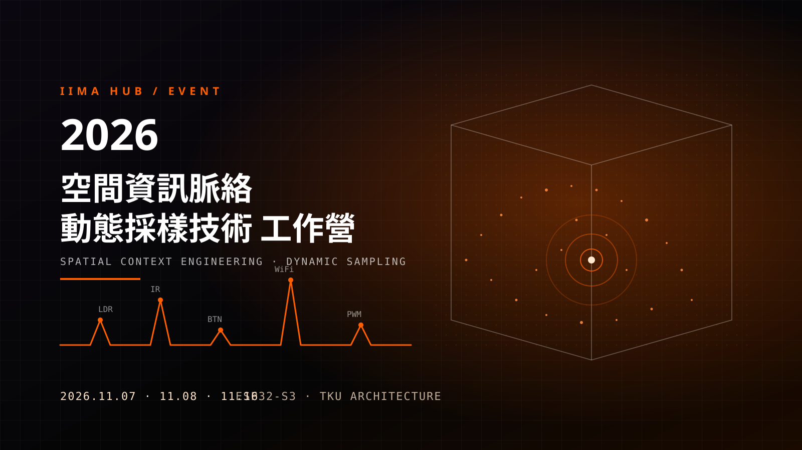

讓空間「看見」你的動作，讓設計「回應」真實的環境！Let space "see" your movement, and let design "respond" to the real environment.

面對生成式 AI 時代，建築設計正從單向的「提示詞工程（Prompt Engineering）」邁向具備環境感知與系統思維的「空間脈絡工程（Spatial Context Engineering, SCE）」。為了克服虛擬生成常見的「脈絡真空化」困境，設計者需要讓數位模型與 AI 代理人能夠真正「看見」、「感知」並「回應」真實空間中的物理屬性與使用者行為。
本工作營為教育部教學實踐研究計畫《空間脈絡工程：融合數位孿生與原型實踐的AI導向建築設計教學方法》之核心實作活動。在這兩天半的密集實作中，我們將帶領學員建立「建築脈絡工程循環（ACEC）」中的環境感知層（Perception Layer）與行動實踐層（Action Layer）：透過 ESP32-S3 微控制器的無線遠端連線功能，即時捕捉空間中的「光線變化、物體通過、身體動作與人為觸發」等動態數據，並將真實世界的行為轉譯為結構化數據流（JSON / Serial / Wi-Fi 通訊），最終驅動燈光與動力馬達等實體致動器，完成從「動態採樣」到「空間互動回饋」的虛實整合原型（Prototyping）。
In the era of generative AI, architectural design is moving from one-directional prompt engineering toward Spatial Context Engineering (SCE), an approach grounded in environmental sensing and systems thinking. To overcome the "context vacuum" that so often limits virtual generation, designers need digital models and AI agents that can actually see, sense and respond to the physical properties and user behaviours of real space.
This workshop is the core hands-on activity of the MOE Teaching Practice Research project Spatial Context Engineering: An AI-oriented Architectural Design Pedagogy Integrating Digital Twins and Prototyping. Over two and a half intensive days, participants build the Perception Layer and the Action Layer of the Architectural Context Engineering Cycle (ACEC): using the wireless connectivity of the ESP32-S3 microcontroller, they capture dynamic data in space, such as changes in light, objects passing by, body movement and manual triggers, translate real-world behaviour into structured data streams (JSON / Serial / Wi-Fi), and finally drive physical actuators such as lights and motors, completing a cyber-physical prototype that runs from dynamic sampling to spatial interactive feedback.
你不需要自己購買零組件！工作營期間，主辦單位將為每位（或每組）學員配發一套完整規劃的「ESP32-S3 空間動態採樣開發套件（附專屬收納箱）」，內含：
You do not need to buy any components. During the workshop every participant (or team) receives a fully planned ESP32-S3 Spatial Dynamic Sampling Development Kit in its own storage box, containing:
| 日期Date | 時間Time | 內容Programme |
|---|---|---|
| 2026-11-07（六Sat） | 13:00 - 18:00 | 下午：基礎感知電路、ADC 採樣與事件觸發Afternoon: basic sensing circuits, ADC sampling and event triggering |
| 2026-11-08（日Sun） | 13:00 - 18:00 | 下午：ESP32-S3 遠端連線、結構化資料流與馬達動力控制Afternoon: ESP32-S3 remote connectivity, structured data streams and motor control |
| 2026-11-16（一Mon） | 09:00 - 12:00 | 上午：空間動態採樣整合實作、原型展示與回饋Morning: integrated spatial dynamic sampling, prototype presentation and feedback |
在 AI 與數位建築時代，我們不只要在電腦裡畫出漂亮的模型，更希望設計出來的空間能夠「感知」真實世界的光線、人流與使用者動作，並做出即時的物理互動與回饋。
本工作營為教育部教學實踐研究計畫之核心實作活動。在這兩天半的密集實作中，你不需要有任何電子電路或寫程式的基礎！我們將從零開始，帶你親手組裝 ESP32-S3 微控制器，學習如何偵測空間中的「光線變化、身體經過、按鈕觸發」等動態數據，並透過 Wi-Fi 遠端連線將數據即時傳回電腦，進而驅動「伺服馬達、直流馬達與燈光」做出實體空間的動態回饋。
📅 活動請全程參與：11/07（六） 13:00-18:0011/08（日） 13:00-18:0011/16（一） 09:00-12:00📍 地點：淡江大學建築學系系館 K102（電腦教室）。
💻 自備物品：個人筆記型電腦與充電器；若筆電只有 Type-C 孔，請自備轉接頭 / Hub。
📦 免買材料：現場配發「空間動態採樣開發套件箱」（內容詳見上方第二節）。
In the age of AI and digital architecture, we want more than beautiful models on screen: we want designed spaces that can sense real-world light, people and movement, and respond with physical interaction in real time.
This workshop is the core hands-on activity of a MOE Teaching Practice Research project. Over two and a half intensive days you need no background in electronics or programming. Starting from zero, you will assemble an ESP32-S3 microcontroller with your own hands, learn to detect dynamic data in space such as changes in light, someone passing by or a button press, stream it to your computer over Wi-Fi, and drive servos, DC motors and lights to make physical space respond.
📅 Please attend the full workshop:Nov 7 (Sat) 13:00-18:00Nov 8 (Sun) 13:00-18:00Nov 16 (Mon) 09:00-12:00📍 Venue: Room K102 (computer classroom), Department of Architecture Building, Tamkang University.
💻 Bring: your laptop and charger; if it only has USB-C ports, bring an adapter or hub.
📦 No materials to buy: a Spatial Dynamic Sampling Development Kit is handed out on site (see Section II above).
恭喜大家完成了兩天半的空間動態採樣與硬體實作挑戰！請花 3~5 分鐘幫我們紀錄一下你這幾天的收穫與想法，填寫完畢即可至前方辦理開發套件清點歸還。
Congratulations on completing two and a half days of spatial dynamic sampling and hardware prototyping! Please take 3 to 5 minutes to record what you learned and what you think, then bring your kit to the front for check-in and return.